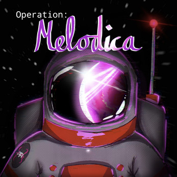
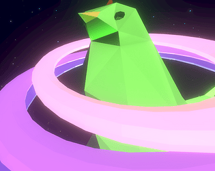
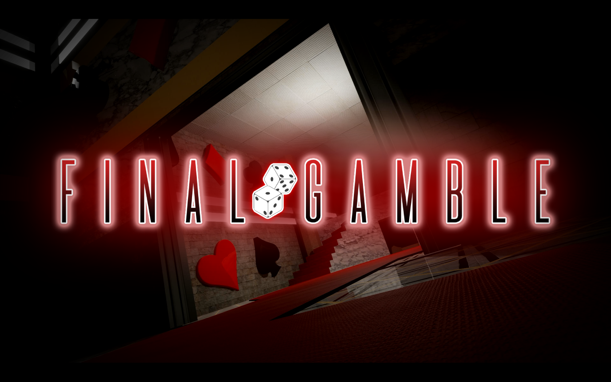
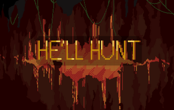

Programmer • Game Developer • Designer
Hi, I'm Taym.
About Me
I'm Taym Atrach, a student at McGill University pursuing a double major in Computer Science and Hispanic Studies, along with a supplemental minor in Computer Science. Before McGill, I specialized in Interactive Media Arts at Dawson College. Since I was young, I've always had a strong interest in creating things and understanding how they work. My journey into video game development began in childhood, and that passion continues to grow today. My goal is to create immersive experiences that allow people to step away from reality for a moment and enter new worlds. Through my studies in computer science, I've been developing both the technical and creative skills behind game development, including game engines, user interfaces, level design, gameplay mechanics, and interactive systems. In my creative work, I enjoy combining technical problem-solving with storytelling and design to build experiences that feel original and engaging. Collaboration is also an important part of how I work. I enjoy sharing ideas, receiving feedback, and learning from people who approach problems differently than I do. Working on playable projects under tight deadlines has also made testing a natural part of my development process. I regularly playtest builds, track down bugs, test different interactions and edge cases, and iterate until things behave the way they're supposed to. That experience has helped me develop a stronger attention to detail and an appreciation for the methodical side of software development, especially the process of finding problems, understanding why they happen, and making systems more reliable.
Skills
Game Development
Testing & QA
Programming
Web Development
Projects

🏆 Award Winner
Operation: Melodica
Award-winning Unity game that combines music, action, and level design.

🏆 4th Place
Which Came First?
Local multiplayer game built for Cosmic Jam 2026 with the theme: Orbit

Bal Arena
2D fighting game made for the Juniper Dev GameJam with the theme: Spin To Win

Final Gamble
A narrative-driven horror experience built in Unreal Engine 5.

He'll Hunt
McGameJam 2026 Submission